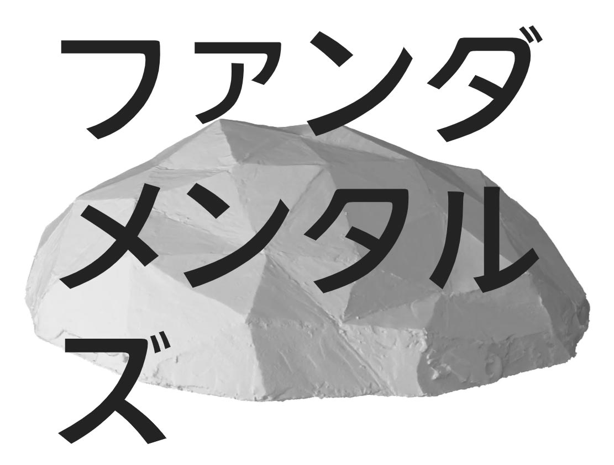

穴
投稿｜2021年06月06日 更新｜
ファンダメンタルズ バザールを視聴しました．
「一見真逆に見える科学サイエンスと美術アート。
しかし、何か普遍に通じるものを追求するという点で両者は等しいのだ。
彼らをファンダメンタルズと呼ぼう。」
偶然，大学に張られていたポスターにあったキャッチコピーに惹きつけられてしまいました．

わたしが参加したセッションでは，アーティストの古谷咲さん（*1）が登壇してらして， 非常に刺激を頂きました． 古谷さんは，”減らす美”をテーマに，各地に穴を掘る制作活動をしているそうで， 色んなことを聞こう，発想しようとしている姿が印象的でした．
”穴”というものがわたしにも魅力的に思えたのは，建築をフィールドにしているからでしょうか． 竪穴住居は，穴によって住まいの境界を規定するものですし，掘りごたつも，穴で人の憩いの場を作る手法だと捉えられます． 古谷さんからは，シエナのカンポ広場も，人を集める穴として機能していると教示いただき， 確かにと感心しました（ぜひ行きたい）．そう考えると，円形闘技場やスタジアムも，穴であると解釈できそうです． 穴が持つアフォーダンス（中心に向かって座りたくなったり，穴に入ってみたくなったり）を再認識できたのが， 空間の形態や操作と人の振る舞いに関係に，わたしの関心の一端があることを確認するいい機会になりました．
ただ，古谷さんにとっての”穴”は，より観念的なもので，その観念を表現するひとつの手段なのだなと感じました． 穴を掘るという身体的活動によって思考を止めたり，生活の中でも物を捨てることで余力のようなものを作ったり． そうしてできた思考の余白や生活の余白といった”穴”を作ることが，”減らす美”のひとつの在り方だと理解しました． そして，わたしが一番驚いたのは，その”穴”を埋めない，ということです．穴の持つアフォーダンスには埋めることも含まれると思うのですが， 意識的に埋めない．そうすることで，内側から湧き出るエネルギーで穴が満たされる． この考え方や営みは，自分の本質を見つめなおす上で示唆的だと思いました．人は満足を外部の物を足すことで実現しようとしがちです． 余白を作ることも，自分の無駄を排して必要なものを取り入れることが前提になっているように思います． しかし，減らすことで本質がより明確な輪郭を帯びてくるという指摘にはハッとさせられました．
思い返せば，モデルのパラメータが少ないほどエレガントさを感じたり，論文も短くシャープな方がかっこいいと感じたり， 分散していた知見に統一的な理論を与えることにロマンを感じたりと，研究の中では，”減らす美”を意識することが多かったように思います． ただ，生活の中で実践することはありませんでした．物も情報も，アクセスできる量が増え続け， 相対的に持っていないことが目についてしまって，穴をついつい埋め合わせようと躍起になってしまいます． そんな時には，埋めることをやめてみて，時にはあえて穴をあけてみて， 自分の内側にあるものが穴から顔を出すのを待ってみるのもいいかもしれません．
最後に，今回のファンダメンタルズ バザールを企画，運営してくださった方に謝意を表します． 科学と芸術がどこか本質的なところでつながっているという直感は，わたしにも共感できます． ただ，両者は言語や文法が違うので，コミュニケーションが取りにくいというのも察しがつきます． そこに，哲学を橋渡しとして設けるのは，両者の本質に迫るいい手段だなと思います． 外部を見つめるか，内側を見つめるか．もしかしたら，外部を通して内側を見つめていたり， 内側を通して外部を理解しようとしていたりしているのかと思ったり． そんな取り留めがなくなりそうな思考を，哲学が整理してくれるのは，理解を深めてくれた要因です． このような機会があれば，そのときもまた参加したいと思います．
*1．古谷咲さんのウェブサイト https://sakisakiartes.com/